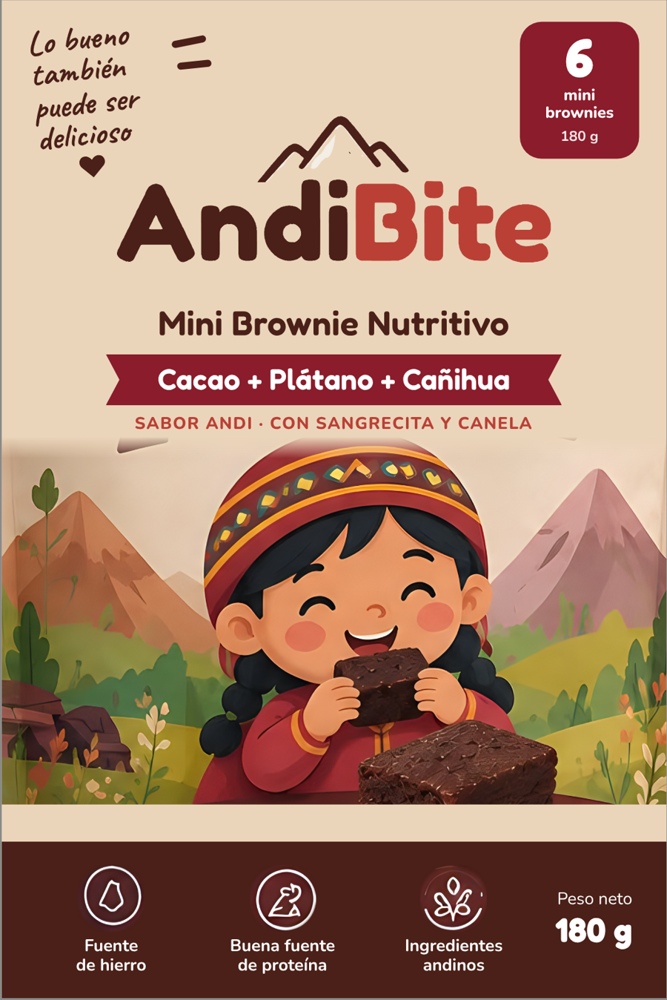
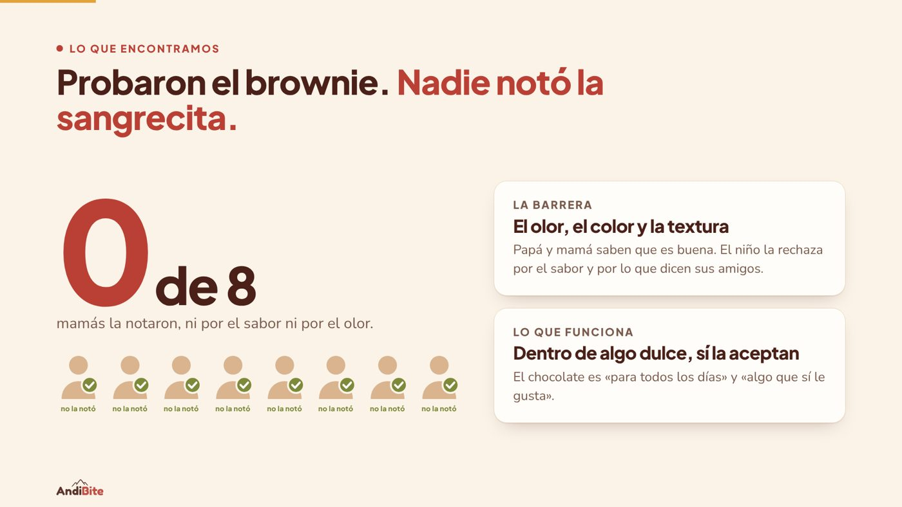
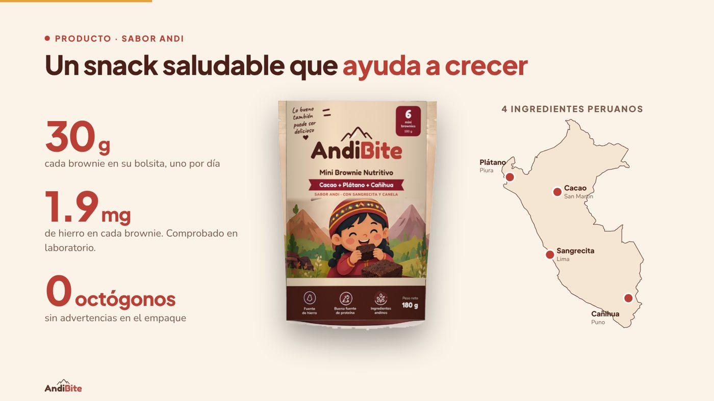
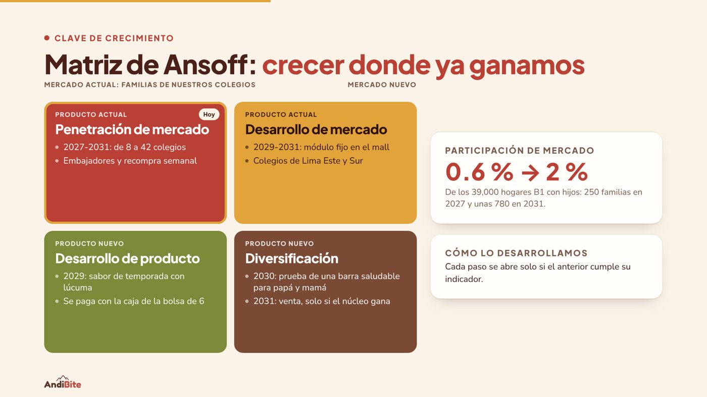
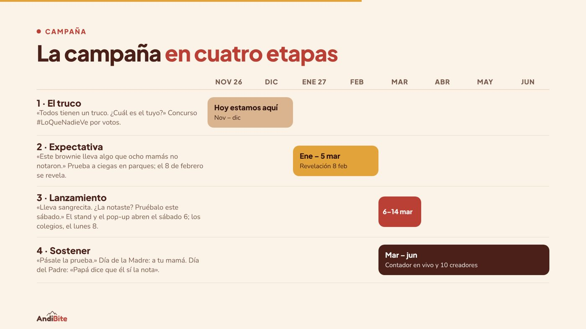
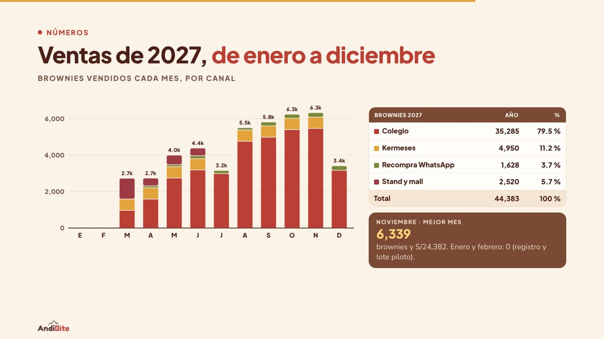
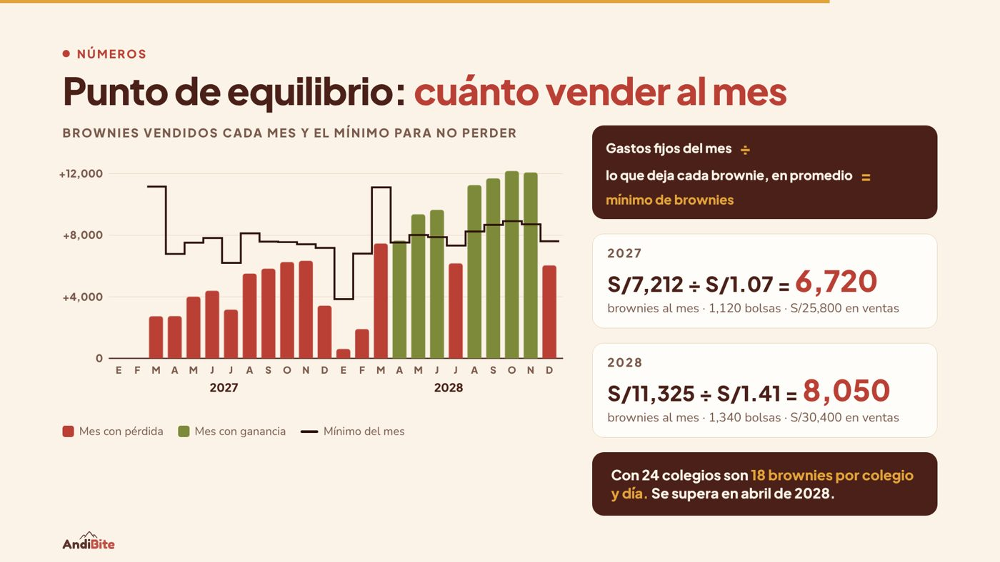
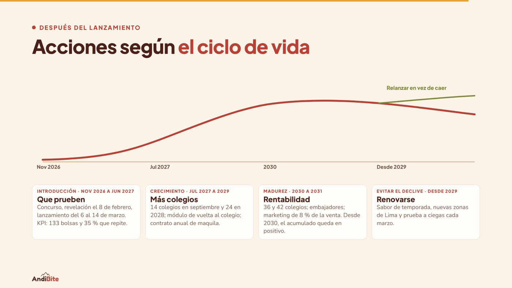

Desarrollo y Lanzamiento de Nuevos Productos · UPN Los Olivos
AndiBite: el proyecto explicado
El snack saludable que ayuda al desarrollo de tu hijo, sin que sea una pelea: un brownie de chocolate sin octógonos, con ingredientes andinos y 1.9 mg de hierro comprobado en laboratorio, para la lonchera de las familias de nivel B de Lima. De la investigación al plan de negocio, la campaña y los números.

CursoDesarrollo y Lanzamiento de Nuevos Productos
DocenteProf. Paola Zevallos
Grupo 2Diana Ayoso, Patricia Cárdenas, Adela Robles, Angie Blas y Carlos Inga
Presentaciónandibite-feria.cingacordova.workers.dev @andibite.pe en Instagram y TikTok
En una página
El proyecto en una página
Papá y mamá quieren que su hijo coma bien para crecer, pero lo que le hace bien no se lo come: la lonchera vuelve llena. AndiBite es el snack saludable que ayuda al desarrollo del niño sin que sea una pelea: un brownie que el niño sí se come. Lleva sangrecita, pero no se nota: en nuestro focus, ninguna de las ocho mamás la notó. Crecemos por colegios, con prueba en persona y pedido semanal del salón, y lo contamos con una campaña de una sola pregunta: «Lleva sangrecita. ¿La notaste?»
S/22la bolsa de 6 (S/3.67 cada brownie); S/5 la unidad
8 → 42colegios de 2027 a 2031; 250 familias en 2027 y 780 en 2031
Abr 2028primer mes con ganancia; punto de equilibrio de 8,050 brownies al mes
58 %ROI a 5 años sobre S/100,000; la inversión se recupera en 2030
S/170,715ventas con IGV en 2027; S/634,073 en 2031
S/15,040marketing de 2027: 10 % de la venta del primer año
9.7×LTV ÷ CAC: S/592 que deja una familia frente a S/60 que cuesta traerla
S/25,432inversión inicial; S/8,321 en documentos y permisos
Contenido
1Quiénes somos
2El problema y la investigación
3Público y mercado
4Producto, marca y app
5Plan de negocio: de lo estratégico a lo operativo
6Marketing mix: una estrategia por cada P
7Canales y distribución
8La campaña de lanzamiento
9KPIs y métricas para escalar
10Demanda y ventas
11Rentabilidad: equilibrio, ROI y financiamiento
12Inversión y trámites para formalizar
13Después del lanzamiento
14Responsabilidad social
1
Identidad
Quiénes somos
Propósito: que alimentar bien a un hijo deje de ser una pelea.
Misión
Un snack saludable y rico para la lonchera, que ayuda al desarrollo del niño: sin octógonos y con hierro comprobado.
Lo que hacemos cada día: producir, llevar al colegio y hacer que la familia vuelva a pedir.
Visión 2031
El snack saludable de la lonchera de 780 familias en 42 colegios de Lima.
Es el 2 % de los hogares B1 con hijos de 4 a 11 años.
Cinco valores que no negociamos
Probar antes que prometer. Primero se prueba; después contamos qué lleva.
Decimos lo comprobado. 1.9 mg de hierro en cada brownie, comprobado en laboratorio. Nunca decimos que «previene la anemia».
Le hablamos a papá y mamá. Ningún niño protagoniza un anuncio (Ley 30021); la pauta es solo para mayores de 18.
Hecho con lo nuestro. Sangrecita de Lima, cacao de San Martín, plátano de Piura y cañihua de Puno.
Trabajo formal. Todos cobran, con EsSalud y carné de sanidad.
Nombre y promesa
AndiBite une «Andi», por los Andes, y «Bite», la mordida: de los Andes a la lonchera. El slogan es «Dulce para ellos. Tranquilidad para ti.»: el niño disfruta el sabor y papá y mamá ganan una mañana sin pelea.
El eje de la empresa: un snack saludable que ayuda al desarrollo de tu hijo, sin que sea una pelea. El hierro comprobado, los 0 octógonos y los ingredientes andinos son la prueba de que es saludable; el sabor es lo que evita la pelea.
2
Lo que escuchamos
El problema y la investigación
Papá y mamá quieren que su hijo coma bien para crecer. El problema es que lo que le hace bien al niño, no se lo come. Cada casa tiene su truco (nuggets de sangrecita, hígado escondido en la sopa) y casi todos fallan por lo mismo: el sabor.
Cómo investigamos
Etapa
Qué hicimos
Qué encontramos
Entrevistas
25 entrevistas a profundidad a papás y mamás (agosto y septiembre de 2026)
La barrera es el olor, el color y la textura de la sangrecita, no el ingrediente. Dentro de un dulce, se acepta.
Focus 1
Virtual, 13 de septiembre de 2026, 8 padres
Eligieron el formato: ganó el mini brownie, con 15 votos frente a 10 de las trufas.
Focus 2
Presencial, 20 de septiembre de 2026, en un colegio, 8 mamás de nivel B, con el prototipo y su empaque
Ninguna notó la sangrecita, ni en el sabor ni en el olor. El precio lo pusieron ellas.
El valor sube al conocerlo
Primero probaron y después preguntamos el precio. Solo por el sabor, pagarían S/10 por la bolsa de 6. Al saber que no tiene octógonos y trae app, S/19 a S/20. Al saber que es uno por día, en su bolsita: S/20 a S/24. Es el mismo brownie: lo que creció fue la tranquilidad.

Lámina 5 de la presentación: ninguna de las 8 mamás notó la sangrecita.
La presentación incluye una lámina para el video del focus («El focus, tal como pasó»), que se completa con la grabación del live.
3
A quién le hablamos
Público y mercado
Papá y mamá de nivel B de Lima, con foco en el B1: de 30 a 45 años, con hijos de 4 a 11 en colegio privado. Trabajan los dos y miran el precio por unidad.
Hogares en el Perú9.6 millones
Hogares en Lima Metropolitana3,362,157
Hogares de nivel B en Lima (18.4 %)618,637
Nivel B1: nuestro foco164,746
B1 con hijos de 4 a 11 años39,000
Familias que compran cada semana250 → 780
Hogares: APEIM 2025. Los 39,000 hogares B1 con hijos se estiman con la proporción de hogares con niños de 4 a 11 años.
Participación de mercado
0.6 % en 2027 → 2 % en 2031
250 familias que compran cada semana el primer año y unas 780 en 2031. Una meta chica y alcanzable.
Buyer persona
Rodrigo Salazar, 40 años, San Miguel
Trabaja él y trabaja su esposa; tiene cinco minutos para la lonchera. «No me vendas salud, véndeme una mañana menos.» Lo convence una sola cosa: que su hijo lo pruebe.
¿Por qué el nivel B? Es el público que probó el brownie y le puso precio. Valora lo práctico y lo que el niño sí se come.
4
Qué creamos
Producto, marca y app
30 gcada brownie en su bolsita, uno por día
1.9 mgde hierro en cada brownie. Comprobado en laboratorio.
0octógonos: endulzado con eritritol, plátano y poca panela

Lámina 10: el producto y sus cuatro ingredientes peruanos.
Sabor 1
Chispa
Chocolate con chispas, para el que solo quiere chocolate.
Sabor 2
Andi
Chocolate, plátano, canela y cañihua, para el que se anima a más.
Marca
Andi es el niño del empaque y Killa, su llamita. Viven en la bolsa y en la app, nunca en los anuncios: los anuncios le hablan a papá y mamá, como pide la Ley 30021. Colores de marca: café, ladrillo, vino, dorado, oliva y crema; letras Plus Jakarta Sans y Nunito.
App Andi
El QR de la bolsa abre la app. Papá o mamá ve lo que llevó hoy en la lonchera, con su hierro, las loncheras de la semana y vuelve a pedir en un clic por WhatsApp. Los juegos del niño se abren con la clave de papá o mamá y no tienen compras.
Producción
Produce la planta maquiladora del INDDA de la UNALM: hornea, pesa y sella. Producir un brownie cuesta S/1.84 en bolsa en 2027 y baja a S/1.50 en 2028 por volumen.
5
Estrategia
Plan de negocio: de lo estratégico a lo operativo
El plan baja de la visión al trabajo de cada lunes. Cada nivel se mide con el siguiente:
1 · Visión
Al 2031
El snack saludable de 780 familias en 42 colegios.
2 · Objetivo 2027
250 familias
Que compran cada semana, en 14 colegios a diciembre.
3 · Estrategia
Crecer por colegios
Probar en persona y volver a pedir cada semana.
4 · Plan de acción
Uno por mes
8 colegios el 6 de marzo; uno más por mes hasta 14.
5 · KPI
19 al día
Brownies por colegio y día al 15 de junio; 35 % repite en abril.
Si en junio cada colegio vende 19 brownies al día, abrimos el siguiente.
FODA
Internas · positivas
Fortalezas
Ninguna de las 8 mamás notó la sangrecita · 1.9 mg de hierro comprobado y 0 octógonos · Precio que pusieron ellas: S/22 · Maquila en el INDDA-UNALM y app Andi
Externas · positivas
Oportunidades
Unos 39,000 hogares B1 con hijos de 4 a 11 · 83 % dice que los octógonos influyen al comprar · Snacks saludables crecen cerca de 6 % al año · Papá y mamá confían en otros padres
Internas · negativas
Debilidades
El primer año pierde: gana desde abril de 2028 · Marca nueva, con S/15,040 de marketing · Cada colegio tiene que abrirnos la puerta · Lote chico: producir cuesta S/2.07 en 2027
Externas · negativas
Amenazas
Niño costero hasta febrero de 2027: plátano de Piura · Cacao caro y cambiante · Brownies sin sellos en el supermercado · Desconfianza de lo envasado «saludable»
FODA cruzado: qué hacemos con él
Cruce
Estrategia
FO · fortalezas y oportunidades
«¿La notaste?»: prueba a ciegas en la puerta del colegio, con «sin octógonos» al frente.
FA · fortalezas y amenazas
Contador en vivo «Probaron · La notaron»: la prueba la pone papá, no la marca.
DO · debilidades y oportunidades
Entrar al colegio por los padres: delegada del salón, reunión de padres y embajadores.
DA · debilidades y amenazas
Contrato anual de maquila, cacao en stock y plátano de dos regiones.
Estructura estratégica
Estrategia genérica de Porter: enfoque con diferenciación. Un público preciso (papá y mamá B1 con hijos en colegio privado) y una diferencia que se prueba: no se nota, hierro comprobado, 0 octógonos.
Puesto
Quién y desde cuándo
Directorio
Socios · una reunión al mes
Gerente general y comercial
Socio a tiempo completo · desde marzo de 2027
Coordinadora de ventas y operaciones
Pedidos, planta, entregas y colegios
Contador y community manager
Externos · desde diciembre de 2026 y febrero de 2027
Promotores por día
Degustación y venta · S/90 por día
Asistente de reparto
Desde 2028, con más de 16 colegios
Planta maquiladora INDDA-UNALM
Aliado: hornea, pesa y sella
Matriz de Ansoff: la clave de crecimiento

Lámina 18: cada paso se abre solo si el anterior cumple su indicador.
Estrategia
Producto · mercado
Qué y cuándo
Penetración de mercado (hoy)
Actual · actual
2027-2031: de 8 a 42 colegios; embajadores y recompra semanal. Participación de 0.6 % a 2 %.
Desarrollo de mercado
Actual · nuevo
2029-2031: módulo fijo en el mall y colegios de Lima Este y Sur.
Desarrollo de producto
Nuevo · actual
2029: sabor de temporada con lúcuma; se paga con la caja de la bolsa de 6.
Diversificación
Nuevo · nuevo
2030: prueba de una barra saludable para papá y mamá; 2031: venta, solo si el núcleo gana.
Matriz BCG: hoy y en 2031
Cuadrante
Producto
Interrogante (hoy)
2027: Chispa, Andi y la unidad a S/5. Luego, lúcuma (2029) y la barra para papá y mamá (2031).
Estrella
2028: bolsas de 6 Chispa y Andi, con 24 colegios.
Vaca
2030-2031: la bolsa de 6, con costo de S/1.46. Su caja paga lo nuevo.
Perro
Lo que no repite, sale. La unidad suelta queda chica a propósito: empuja la bolsa.
La app Andi no se mide como producto: sostiene la recompra de las bolsas.
Contexto del mercado y fenómeno El Niño
El mercado acompaña: los snacks saludables crecen cerca del 6 % al año y el 83 % dice que los octógonos influyen en lo que compra. El riesgo es el clima: el ENFEN (13 de noviembre de 2026) anunció Niño costero hasta febrero de 2027, con lluvias fuertes en el norte; se espera 11 % menos banano exportado en 2027, y el cacao ronda US$5,400 por tonelada (octubre de 2026). Cacao y plátano pesan unos S/0.13 por brownie: el riesgo no es el costo, es quedarnos sin insumo.
Acción 1
Cacao en stock
Comprar en febrero lo de 3 meses.
Acción 2
Plátano de dos orígenes
Piura y San Martín.
Acción 3
Chispa de respaldo
Si falta plátano, más Chispa. El precio no se toca en 2027.
6
7P
Marketing mix: una estrategia por cada P
P
Estrategia
Producto
Snack saludable de 30 g en su bolsita, que ayuda al desarrollo: Chispa y Andi; 0 octógonos y 1.9 mg de hierro comprobado.
Precio
Por valor percibido: bolsa de 6 a S/22 (S/3.67 cada uno) y unidad a S/5. Dentro de lo que dijeron las mamás (S/20 a S/24 por 6; S/4.50 a S/5.90 por unidad). Un brownie de pastelería cuesta S/10.88 en promedio (6 pastelerías de Lima, 18-nov-2026).
Plaza
Selectiva: colegio (pedido del salón y quiosco donde lo permitan), kermés, stand de fin de semana y mall por temporadas.
Promoción
«Lleva sangrecita. ¿La notaste?»: S/15,040 en 2027; anuncios solo para adultos.
Personas
Gerente, coordinadora y promotores con carné de sanidad; delegadas y embajadores.
Procesos
Prueba, pedido del salón, pago por Yape, entrega el lunes en la puerta y recompra.
Evidencia física
Bolsa con «No la escondemos», registro sanitario y el contador en vivo.
Costo y ganancia por presentación
Presentación
Precio
Costo de producir
Ganancia bruta
Contribución
Bolsa de 6 (por brownie)
S/3.67
S/1.84
40.7 %
33 % (S/1.03 en 2027; S/1.37 en 2028)
Unidad suelta
S/5.00
S/1.67
60.7 %
55 %
Detalle en el Excel «AndiBite - Costos y ganancia por presentacion.xlsx» (precio sin IGV, costo de producir, gastos fijos y ganancia por canal).
7
Plaza
Canales y distribución
Vendemos donde ya está la lonchera. Todo empieza probando, en persona; el WhatsApp solo junta el pedido de la semana y avisa cuándo volver a pedir.
Canal
Cómo funciona
Desde
1 · Venta en el colegio
Degustación en la puerta; la delegada junta el pedido del salón, cada familia paga por Yape y entregamos en mano el lunes.
8 colegios en marzo de 2027, 14 en septiembre y 24 en 2028
1b · Quiosco del colegio
Donde el colegio y su quiosco aceptan productos sin octógonos con edulcorante: el niño compra su unidad en el recreo. El quiosco compra a S/3.50 y vende a S/5; va en la misma entrega del lunes y deja unos S/1.06 por unidad.
Desde marzo de 2027, colegio por colegio
2 · Kermeses y reuniones de padres
La familia prueba junta; se vende sobre todo el brownie suelto.
Marzo de 2027
3 · Stand de fin de semana
Feria municipal del Campo de Marte, Jesús María, sábados y domingos: degustación y venta.
Marzo de 2027; todo el año si vende 100 al día
4 · Centro comercial
Real Plaza Salaverry (zona con 51.7 % de hogares B): pop-up de lanzamiento y módulo en la vuelta al colegio.
Marzo de 2027 y febrero de 2028
Estrategia de distribución selectiva
Pocos puntos, elegidos porque ahí se prueba y se vuelve a comprar: el 79 % de los brownies de 2027 sale del colegio. No vamos a bodegas ni supermercados: ahí nadie prueba. Dentro del colegio, además del pedido del salón, entramos al quiosco cuando el colegio lo permite, para que el mismo niño pueda comprar por unidad. Esa venta no está en la proyección: es adicional.
¿Por qué te debo comprar? Las cinco razones del cliente
Mi hijo se lo come: ninguna mamá notó la sangrecita.
Ayuda a su desarrollo: 1.9 mg de hierro comprobado.
Sin octógonos: eritritol, plátano y poca panela.
Me resuelve la mañana: uno por día, a S/3.67.
Llega el lunes al colegio y vuelvo a pedir en un clic.
El centro comercial, paso a paso
Paso
Qué
Condición
6 al 14 de marzo de 2027
Pop-up «Laboratorio ¿La notaste?», con cabinas de prueba a ciegas y el contador en vivo
1,350 pruebas · S/2,600 dentro del marketing
15 de febrero al 15 de marzo de 2028
Módulo temporal en la vuelta al colegio
Meta: 100 brownies por día
Desde 2029
Módulo fijo de 4 m² (unos S/8,800 al mes con personal)
Se abre si el temporal vende 170 brownies al día
El mall no es el canal principal: un módulo fijo necesita unos 140 compradores al día para no perder, y lo realista son unos 70. Por eso entra en la temporada en que se arma la lonchera.
8
Promoción
La campaña de lanzamiento
«Lleva sangrecita. ¿La notaste?» · «No la escondemos. Simplemente no se nota.» · #LoQueNadieVe
Papá y mamá ya no le creen a otro «saludable»: le creen a su propia boca. Por eso primero prueban y después se enteran. La historia se cuenta en tres actos (mil trucos, un brownie que ocho mamás probaron sin notar nada, una pelea menos) y en cuatro etapas:

Lámina 29: la campaña en cuatro etapas, de noviembre de 2026 a junio de 2027.
La idea que hace hablar
Contador en vivo «Probaron · La notaron»
Cada lunes publicamos la cifra real, también la de quienes sí la notaron. En casa, «Pásale la prueba»: quien compró le da un brownie al tío que todo lo nota y graba su cara.
Personas reales, no famosos
10 papás y mamás creadores
De 3,000 a 30,000 seguidores. El 28 % confía en amigos y familia; en influencers grandes, apenas el 7 %.
Redes: @andibite.pe en Instagram y TikTok, y WhatsApp Business para los pedidos.
Presupuesto de marketing 2027: S/15,040
Partida
S/
Manejo de redes y videos de reacción
5,500
Anuncios en Meta y TikTok (mayores de 18)
2,950
Pop-up «Laboratorio ¿La notaste?»
2,600
Embajadores y muestras en colegios
1,920
Creadores y prueba en la calle
1,500
Kit del stand, volantes, prensa y premios
570
Total (10 % de la venta del primer año)
15,040
En 2028 baja al 6 % (S/18,503), porque ya hay recompra.
9
Control
KPIs y métricas para escalar
Tipo
KPI
Meta
Fecha de corte
Comercial
Bolsas pedidas por los salones
133
31 de marzo de 2027
Comercial
Familias de marzo que vuelven a pedir
35 %
30 de abril de 2027
Comercial
Brownies por colegio y día (si se cumple, se abre el siguiente colegio)
19 o más
15 de junio de 2027
Comunicación
Costo por contacto de WhatsApp que traen los anuncios
S/8.23 o menos
Cada mes
Comunicación
Visualizaciones y videos de reacción; respuesta en menos de 2 horas
125,000 y 30 videos
Enero a junio de 2027
Financiero
Resultado del mes; caja mínima
Positivo; nunca bajo S/7,000
Desde abril de 2028
Si un KPI no se cumple, hay una acción escrita: por ejemplo, si repite menos del 30 %, no se gasta en anuncios nuevos y se vuelve a las muestras.
Métricas para escalar: CAC, LTV y NPS
S/60CAC: S/15,040 de marketing ÷ 250 familias que compran cada semana (2027)
S/592LTV: S/8.22 por bolsa × 36 bolsas al año × 2 años
9.7×LTV ÷ CAC. Prudente 5.9; en el peor caso, 3
40 → 50NPS meta en 2027 y desde 2028: «Del 0 al 10, ¿recomendarías AndiBite?»
Regla para escalar: abrimos más colegios solo si LTV ÷ CAC es 3 o más, con 6 meses de datos reales.
10
Proyección
Demanda y ventas
Proyección de la demanda por canal (brownies al año)
Canal
2027
2028
2029
2030
2031
Pedido del salón (colegios)
35,285
83,126
103,908
124,689
145,471
Kermeses y reuniones de padres
4,950
6,600
8,250
9,900
11,550
Recompra por WhatsApp
1,628
3,310
4,137
4,965
5,792
Stand de fin de semana y mall
2,520
3,000
3,750
4,500
5,250
Total de brownies
44,383
96,036
120,045
144,054
168,063
Ventas con IGV (S/)
2027
2028
2029
2030
2031
Total
170,715
362,328
452,910
543,492
634,073
El colegio es entre el 80 % y el 87 % de la venta. Colegios al cierre de cada año: 14, 24, 30, 36 y 42.
Proyección de ventas de 2027, de enero a diciembre
Mes
Ene
Feb
Mar
Abr
May
Jun
Jul
Ago
Sep
Oct
Nov
Dic
Brownies
0
0
2,734
2,741
4,005
4,392
3,162
5,510
5,826
6,254
6,339
3,420
Ventas S/
0
0
10,516
10,543
15,405
16,893
12,162
21,194
22,409
24,055
24,382
13,155
Enero y febrero no se vende: son el registro sanitario, el lote piloto y los contratos (con una preventa de 133 bolsas en febrero). Julio y diciembre bajan por las vacaciones. El mejor mes es noviembre, con 14 colegios.

Lámina 37: brownies vendidos cada mes de 2027, por canal.
11
Números
Rentabilidad: equilibrio, ROI y financiamiento
La empresa se vuelve rentable entrando a más colegios, no vendiendo más en cada uno: cada colegio vende unos 25 brownies por día de clase.
Indicador
2027
2028
Colegios al cierre
14
24
Brownies
44,383
96,036
Ventas con IGV
S/170,715
S/362,328
Lo que deja cada brownie (promedio)
S/1.07
S/1.41
Costos fijos al mes
S/7,212
S/11,325
Marketing
S/15,040 (10 %)
S/18,503 (6 %)
Resultado del año
−S/38,889
−S/4,678
Punto de equilibrio mensual
Gastos fijos del mes ÷ lo que deja cada brownie = mínimo de brownies al mes.
2027
S/7,212 ÷ S/1.07 = 6,720 brownies al mes
1,120 bolsas · unos S/25,800 en ventas al mes.
2028
S/11,325 ÷ S/1.41 = 8,050 brownies al mes
1,340 bolsas · S/30,400 en ventas · 18 brownies por colegio y día con 24 colegios. Se supera en abril de 2028.

Lámina 39: brownies vendidos cada mes frente al mínimo para no perder.
ROI
58 %ROI del negocio a 5 años: S/58,150 de ganancia sumada 2027-2031 ÷ S/100,000. Se recupera en 2030.
138 %ROI del marketing 2027: cada S/1 trae S/2.38 de margen (75 % del mérito al marketing). ROAS 9.6.
174 %ROI si en 2029 la bolsa pasa a S/24, dentro del rango que dijeron las mamás (sensibilidad).
Resultado por año: −S/38,889 (2027), −S/4,678 (2028), +S/20,331 (2029), +S/28,611 (2030) y +S/52,775 (2031).
Financiamiento: S/100,000
Fuente
S/
Cuándo
Aporte de los cinco socios
50,000
Dic. 2026
Segundo aporte o inversionista
35,000
May. 2027
Préstamo de caja municipal (TEA 40 %)
15,000
Ene. 2028
En qué se usa
S/
Reserva de caja a fines de 2028
27,044
Inversión inicial
25,432
Resto de la pérdida de 2027
22,903
Marketing 2027
15,040
Cuotas del préstamo 2028
9,581
La caja nunca baja de S/7,948 (abril de 2027, antes del segundo aporte). Postulamos a StartUp Perú: si se gana, reemplaza al segundo aporte y al préstamo.
12
Cumplimiento regulatorio
Inversión y trámites para formalizar
La inversión inicial es de S/25,432. Incluye todos los documentos y permisos para operar formalmente:
Trámite
Entidad
S/
Constitución de la S.A.C.
SUNARP y notaría
650
RUC y REMYPE
SUNAT y Ministerio de Trabajo
0
Legalización de libros
Notaría
150
Marca, clase 30
INDECOPI
401
Registro sanitario (tasa)
DIGESA
0
Análisis para el registro
Laboratorio acreditado
1,200
Perfil nutricional y hierro
Laboratorio acreditado
1,600
Vida útil (2 sabores)
Laboratorio acreditado
2,400
Etiqueta y revisión
Norma de rotulado y octógonos
650
Contrato de maquila
Abogado
400
Libro de reclamaciones
INDECOPI
150
Carnés de sanidad y póliza
Municipalidad y aseguradora
720
Total documentos y permisos
8,321
Inversión inicial
S/
Documentos y permisos
8,321
Arranque
6,920
Desarrollo
3,591
Equipos
2,838
Marca y app
2,250
Imprevistos
1,512
Total
25,432
No aplican licencia de funcionamiento ni certificado de Defensa Civil: produce la planta maquiladora, que ya cuenta con los suyos. El régimen laboral es REMYPE, con EsSalud.
13
Ciclo de vida y diversificación
Después del lanzamiento

Lámina 43: acciones según el ciclo de vida.
Etapa
Acción
Qué hacemos
Introducción · nov 2026 a jun 2027
Que prueben
Concurso, revelación el 8 de febrero, lanzamiento del 6 al 14 de marzo. KPI: 133 bolsas y 35 % que repite.
Crecimiento · jul 2027 a 2029
Más colegios
14 colegios en septiembre y 24 en 2028; módulo de vuelta al colegio; contrato anual de maquila.
Madurez · 2030 a 2031
Rentabilidad
36 y 42 colegios; embajadores; marketing de 8 % de la venta. Inversión recuperada en 2030.
Evitar el declive · desde 2029
Renovarse
Sabor de temporada, nuevas zonas de Lima y prueba a ciegas cada marzo.
Diversificación, solo si el núcleo funciona
Una barra de cacao y cañihua con sangrecita, para papá y mamá. La familia ya confía en la marca y se suma al pedido del salón: no abre un canal nuevo.
2029
Sabor de temporada con lúcuma
Desarrollo de producto.
2030
Prueba de la barra
Con 50 familias.
2031
Venta
Si las familias repiten.
Condición: 2030 con ganancia, 36 colegios y 35 % de familias que repiten. Se paga con utilidad, nunca con préstamo. Lo que no haremos: snacks salados; la sangrecita solo se acepta en lo dulce.
14
ODS 2 · meta 2.2
Responsabilidad social: «Loncheras que ayudan a crecer»
En el Perú, 1 de cada 6 niños de 5 a 11 años tiene anemia (INS-CENAN 2025). Alineados al ODS 2 (poner fin a todas las formas de malnutrición), damos talleres para papá y mamá en colegios públicos de Lima Norte: cómo armar una lonchera saludable, con hierro de mercado, por unos S/3.
2027 · piloto
1 taller
50 familias, dentro del presupuesto de muestras en colegios.
Desde 2029 · primer año con ganancia
1 % de la venta
Unos S/3,800 al año: 10 talleres y 500 familias, dentro del 8 % de marketing.
Cómo se mide
7 de cada 10
familias arman 2 loncheras saludables con hierro por semana, a los 30 días.
El plan no cambia las cifras del negocio: el piloto sale del presupuesto de muestras y, desde 2029, el 1 % entra dentro del marketing.
Cierre
No hace milagros. Es una pelea menos cada mañana.
AndiBite: dulce para ellos, tranquilidad para ti.
Presentación animada: andibite-feria.cingacordova.workers.dev · Instagram y TikTok: @andibite.pe · Archivos de apoyo: «AndiBite - Plan de lanzamiento.pdf», «AndiBite - Modelo financiero.xlsx» y «AndiBite - Costos y ganancia por presentacion.xlsx».